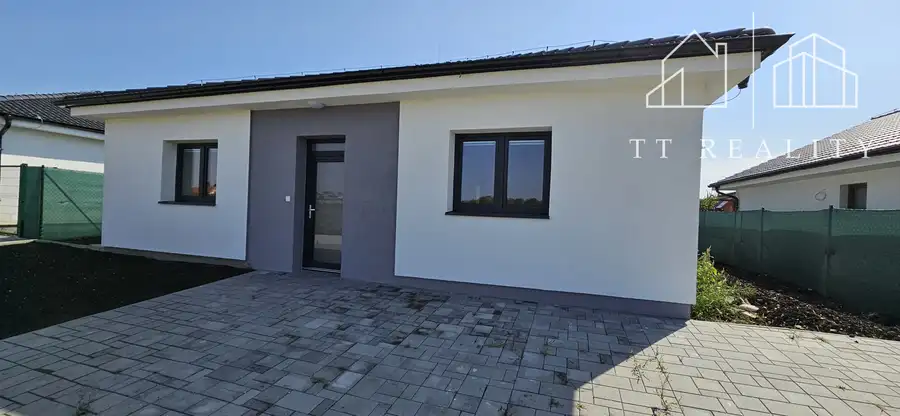
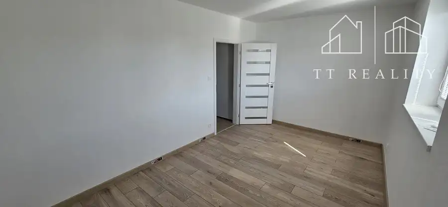
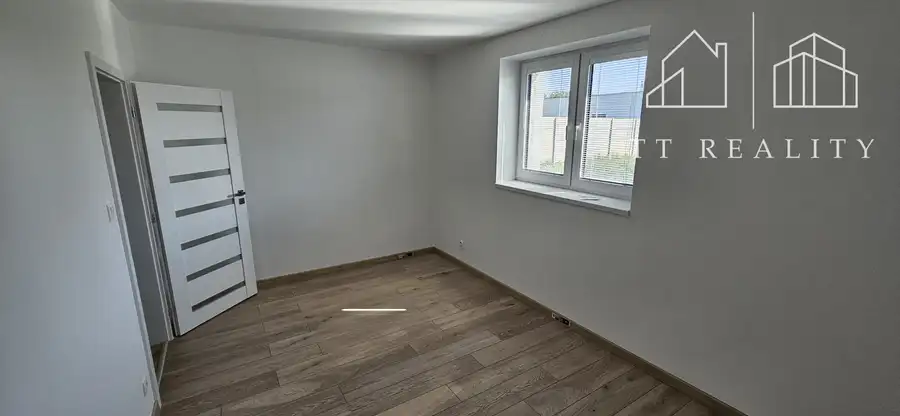
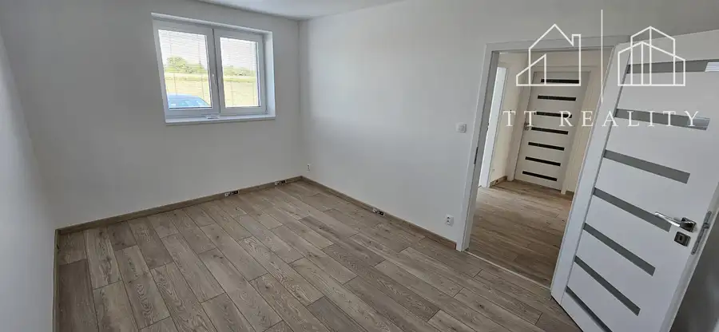
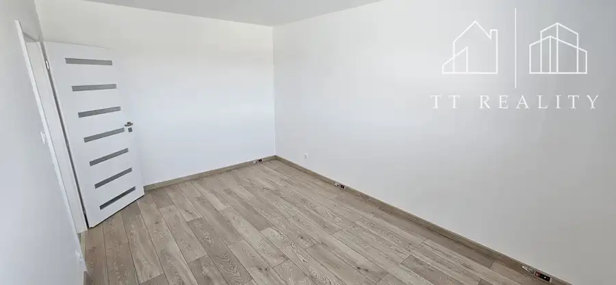
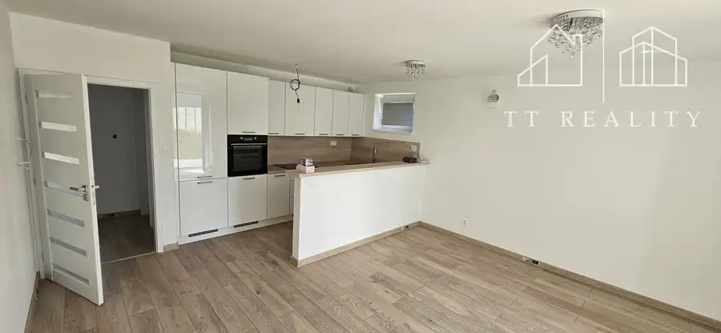

TT Reality - 4-izbová novostavba rodinného domu v obci Opoj
Opoj






- Plocha119 m²
- StavNovostavba
- VlastníctvoOsobné
- Energetická triedaA
O nehnuteľnosti
TT Reality vám so súhlasom majiteľa ponúka na predaj novostavbu rodinného domu v pokojnej časti obce Opoj. Popis nehnuteľnosti :Pre koho je určená táto nehnuteľnosť? Pre rodinny s deťmi alebo páry, ktorých predstavou bývania je užívanie si atmosféry vidieka s výbornou dostupnosťou do mesta za prácou, školou, krúžkami alebo nákupmi. Rozmery :Rovinatý pozemok na ktorom je postavený tento pekný bungalov má rozlohu 579 m2. Zastavaná plocha domu je 119 m2. Podlahová plocha je 93 m2. Špecifikácia nehnuteľnosti :Rodinný dom je postavený z tehly Porotherm-380 mm, zateplenie má hrúbku 220 mm. Strecha je sedlová so strešnou krytinou, ktorá je zladená v rovnakej farbe ako odkvapy, okná a vchodové dvere. Dom je napojený na všetky inžinierske siete - voda, elektrika, plyn, septik ( príprava na napojenie na obecnú kanalizáciu ). Okná sú plastové s izolačným trojsklom. Tienenie je riešené interiérovými žalúziami. Súkromie zabezpečuje oplotenie okolo pozemku, čiže nie je potrebná dodatočná investícia. Pred domom je zámková dlažba, ktorá zaistí komfotné parkovanie pre 3 autá. Interiér :Dom je rozdelený na dennú a nočnú časť. Pozostáva zo vstupnej chodby, spálne, dvoch detských izieb, samostatnej toalety, kúpeľne súčasťou ktorej je ďaľšie wc, priestrannej obývacej izby spojenej s kuchyňou. Na chodbe je vstavaná skriňa, kde je dostatok úložného priestoru. Z obývacej izby je výstup na terasu zo zámkovej dlažby. O komfort sa stará podlahové kúrenie v celom dome. Lokalita :Opoj je dynamicky rozvíjajúca sa obec v blízkosti mesta Trnava. Za posledné obdobie sa tu vybudovali nové lokality, bytovky, rodinné domy. Zákonite rukou v ruke sa budovala aj obecná infraštruktúra. Nachádza sa tu materská škola, detské ihrisko, pošta, krčma, potraviny a posilňovňa. Ak by to bolo niekomu málo, v blízkom okolí sú dostupné ďaľšie možnosti spoločenského vyžitia alebo rekreácie. Devízou je ale výborné napojenie na diaľnicu R1 a D1. Čiže ak pracujete v Trnave, Bratislave, Galante alebo Nitre, cestovanie bude pre vás pohodlné. Názor makléra :Napĺňa vás predstava bývať na dedine, užívať si kľudné postredie, nasávať atmosféru vidieka a popri tom byť na diaľnici R1 a D1 za 3 minúty a v centre Trnavy do 7 minút? Ak ste si odpovedali ÁNO, tak táto pekná novostavba spĺňa vaše požiadavky. Pekný, útulný, postavený z kvalitných materiálov na priestrannom pozemku, to je presne to čo vám tento rodinný dom ponúka. Cena a vybavenie :V ponuke máme dve možnosti odovzdania nehnuteľnosti. 284 000 eur - dom v štandarde - podlahy, interiérové dvere a zárubne, tepelné čerpadlo vzduch/voda, obklady, dlažby, sanita ( farby a dizajn si viete vybrať podľa vašich predstáv )264 000 eur - dom v stave holodomDrobná rada na záver : Neváhajte s kúpou nehnuteností. Úrokové sadzby na hypotékach začínajú postupne klesať, čo znamená pre ľudí lepšiu dostupnosť hypoték. Tým pádom treba očákavať postupný nárast cien nehnuteľností. Hypotéku si ale budete vedieť znížiť refinancovaním, kdežto ceny nehnuteľností klesať nebudú :)Ak vás táto ponuka zaujala a máte záujem o podrobnejšie informácie, kontaktujte nás, radi vám zodpovieme vaše otázky.Ľuboš Hanzel+421911088011lubos.hanzel@ttreality.com
Parametre
- Druh
- Rodinný dom
- Dátum zverejnenia
- 27. 08. 2025
- Dĺžka pozemku
- 36
- Energetický certifikát budovy
- A
- Plocha pozemku
- 579 m²
- Počet nadzemných podlaží
- 1
- Rok výstavby
- 2023
- Stav nehnuteľnosti
- Novostavba
- Terén pozemku
- Rovinatý
- Typ
- Predaj
- Typ konštrukcie
- Tehlová
- Vlastníctvo
- Osobné
- Vybavenie
- Terasa
- Vykurovanie
- Podlahové
- Zastavaná plocha
- 119 m²
- Úžitková plocha
- 119 m²
- Šírka pozemku
- 16